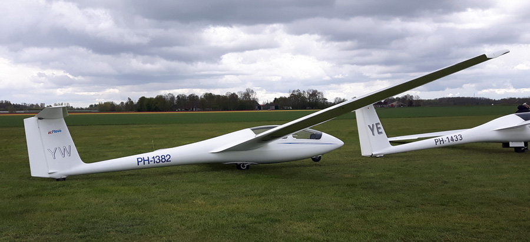

De ASK-21 is het primaire lesvliegtuig van ZC Flevo. In 2009 is deze in dienst gekomen als vervanger van zijn voorganger, de ASK-13. Door de prettige vliegeigenschappen is de ASK-21 misschien wel het beste lesvliegtuig van dit moment, op de ASK-21 maak je dan ook je eerste solovlucht. Daarnaast is dit vliegtuig geschikt voor aerobatics.
| Registratie | Callsign | Bouwjaar | Spanwijdte | Lengte | leeggewicht | Overtreksnelheid | Maximum Snelheid | Beste Glijgetal | Aerobatics |
|---|---|---|---|---|---|---|---|---|---|
| pH-1382 | YW | 1994 | 17 Meter | 8,35 meter | 360 Kg | 65 Km/h | 280 Km/h | 33,5 (bij 90 Km/h) | Alle Manoeurvres |